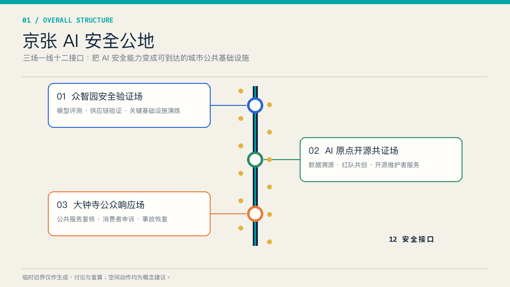
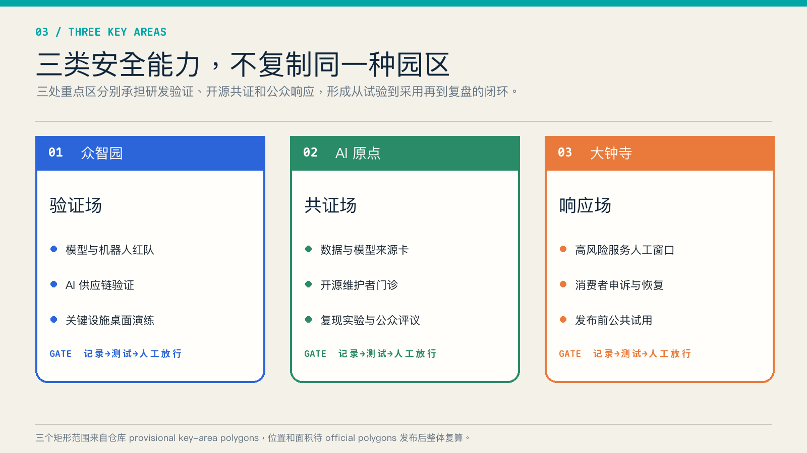
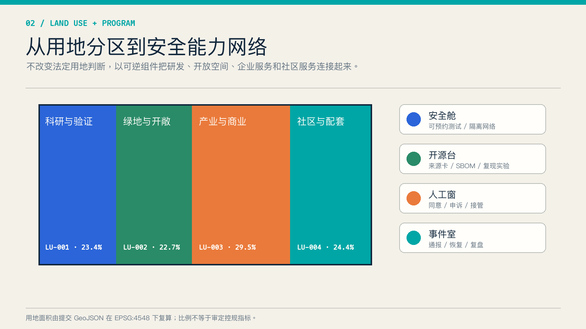
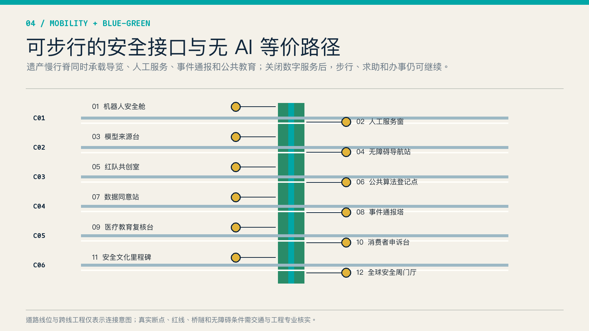
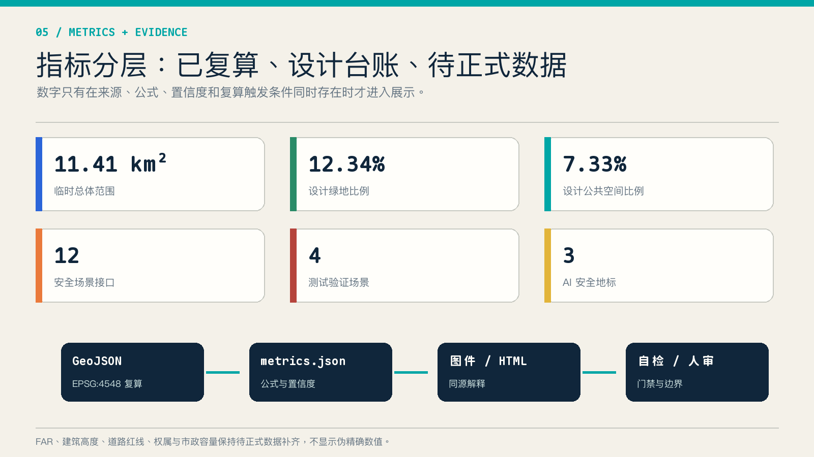

众智园
模型与供应链安全验证
三场一线十二接口：把模型与供应链验证、开源溯源、人工复核和事故响应组织为可到达的城市公共基础设施。
临时边界 · 概念建议 · 待 official polygons 后整体复算
统筹研究范围配置共享安全能力，总体设计范围形成公共学习脊与横向连接，三处重点区域分别承担验证、共证和响应。

模型与供应链安全验证
开源来源、复现与红队共创
公共服务复核、申诉与恢复


六条横向连接只表达东西缝合意图；道路线位、桥隧、无障碍与市政条件须专业核实。

| 编号 | 任务 | 门槛 |
|---|---|---|
| S01–S04 | 受控测试验证 | 隔离环境 + 人工放行 |
| S05–S07 | 开源共证 | 最小披露 + 公众反馈 |
| S08–S12 | 公共服务与文化 | 无 AI 等价路径 + 申诉 |
自检状态：结构、拓扑、离线 HTML、双语材料和专业证据链需在提交前全部通过。来源只采用公开或清权材料；临时边界、控规、权属、市政和运营责任均进入假设台账。
